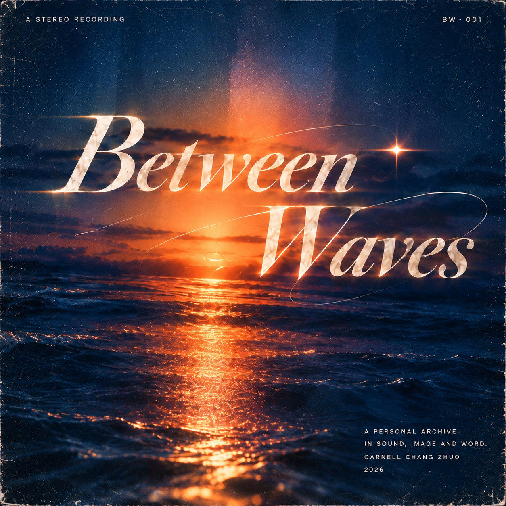

CR / CREDITS · ABOUT
Credits关于
我是卓畅 Carnell Chang Zhuo。我关注内容、研究、设计与技术如何在真实问题里相遇，也希望在不同媒介之间寻找更准确的表达方式。

01 · BIO
关于我
比起把自己固定在单一身份里，我更习惯从问题出发。做内容时，我会先理解目标用户的真实感受，再判断什么值得被说清楚。
我也是喜爱剧情的游戏长线玩家，持续体验《未定事件簿》《崩坏：星穹铁道》和《代号鸢》，并将玩家经验带入混剪、女性玩家研究、游戏分析、社会观察与分析之中。
02 · EDUCATION
教育背景
从南京师范大学到牛津大学，我的学习经历连接教育、文化研究与数字媒介。如今，我已放下对学术过多的执念和理想，更愿意把研究、写作与产品化表达带回真实项目。
03 · ALBUM NOTE
为什么是一张唱片
BETWEEN WAVES 把个人作品整理成一张仍在播放的唱片。Side A 收录创作、影像与文化表达；Side B 收录系统、教育与持续实践；Bonus Tracks 留给尚未被主线定义的试验。
我喜欢音乐，也喜欢不同作品带来的情绪与叙事。把作品集做成唱片，是因为这些项目像不同曲目：风格各异，却记录着同一段成长。
也欢迎和我分享你最近在听的音乐——R&B、HOYO-MiX、Taylor Swift、陶喆，或任何你喜欢的声音。
04 · CONTACT
Contact Me
Portfolio concept, writing and design by Carnell Chang Zhuo. Built as an evolving personal archive, 2026.
frosttay@126.comchangzhuo02@gmail.comB 站主页 · Anstonei ↗
或者在现实世界和我偶遇吧！